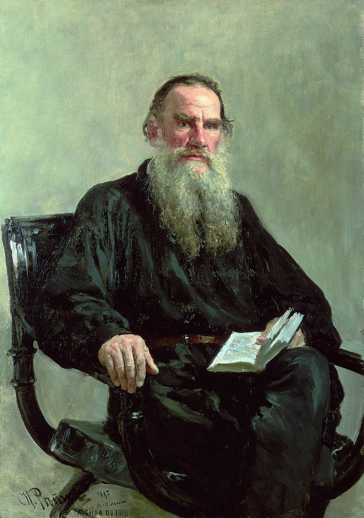
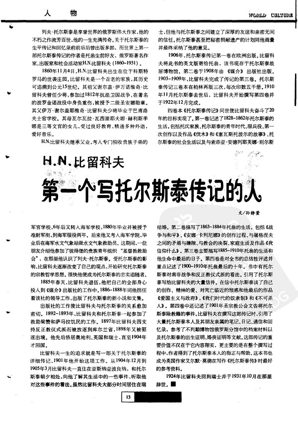

里尔克《布里格手记》原始结尾第一稿
【Dasha试译】：
如果上帝存在，那么一切就都已经做成，我们，凄惶、多余的幸存者，以怎样的表面行动度过我们的一生，于我们而言无关痛痒。我们看不见吗？那位伟大的敬畏死亡的人，在他越来越吝啬于接受一个现存的、共有的上帝之时，不已经毁坏了他的本性的蒙福土地吗？昔日，他在与一切的搏斗中发现了自己改变着的劳动，那时他是何等地伸手相助。他不是在劳动中、在他有福的辛劳中开始他的唯一可能的上帝了吗，那些生活在他书里的人，不也充满不耐地开始了每个人心中的上帝？但后来试探者出现在他面前，使他看到自己做下了一件微不足道的事。而他，始终纯真的人，想要做重要的事。当真实的人无法掌握他们自己的命运的时候，试探者再次出现，劝解他，说他无需对此负责，他只是在描写被想象者与被虚构者的命运。最后，试探者日日夜夜留在雅斯纳雅的农庄，成长着。他的欣喜是参与进去，与受迷惑者一起越来越震惊地抛弃心之工作，绝望地在所有他未掌握的职业中锻炼自己。有企图的生活在受试探者这些寒酸的心灵手巧之上变得狭窄。人竟可以不明白生活，对此他不再理解；他想将生活像文本一样逐字逐句地接受。凡是不能立刻清晰的，他都将之排除，可能出现的一切，被立刻删去，多过一半的往事遭到谴责。这个时刻，他正俯身坐对一只不想被他制作的鞋，这个贫穷而沉重的时刻，就像是最后一刻。于是当珩鸟在身后树丛里发出声音的时候，死的面前就无物更存在。他回想起死于十三岁的少年：有什么目的，以怎样的权利？他想起Hyères（耶尔）的残酷日子，那时他的兄长尼古拉突然变了样，变得顺从，任人看护。他也变了样：他要死了？带着一种无以伦比的惊骇他预感到，他自己的、独一的上帝几乎并未被开始，他，如果现在他死去，他将无法在彼岸生活；他发育不全的灵魂会令人感到羞愧，这个灵魂会像早产儿一样隐匿在永恒里。这是他的骄傲的全部恐惧，攫握着他，但是面对试探，恐惧也许会催促他越发迫切地继续创造他隐密的上帝，只要他还带着恐惧。但此时他却不给自己丝毫时间，以全部内心活动，他顶撞着自己意识中强硬的反对理由；带着绝望的好奇心，他总是再一次强迫自己遭受自己的濒死痛苦，而这个濒死痛苦临到他，千般相似；更可怕的是，他没有能力同时给与自己垂死者的精神在场，将苦楚之力拖向自身、与这些力合为一体、或许变得迷狂的精神在场。所有人都抑郁地穿过发生过如此多不正义的、变了样的房子。而那位温存的、无意间成为的女义人，她寂静的此在在她的居室上方就像是镇宅之物，但她已不在。她没有以伟大爱者的清晰眺望预见过这死亡畏惧的降临吗？她死前数年，她在她的房间里突然转身，请求给与她另一个、一个更低劣的房间，好让她的死的附加意义不会落在这里这个好的房间里，好让这个好的房间迟些腐败。然后带着怎样的谨慎与洁净啊，她并未死去。她无价值的东西被朴素地排在一起；看上去似乎她只是将它们留下，因为她不愿想起有什么东西属于她。出于对现实的胆怯她没有销毁任何东西；一切都在那里，甚至小珍珠手袋，里面放着带有她旧日秘密的纸条；他发现自己似乎也不是她的心所赢得的财物，必须认真地归还给上帝严格的国库。这位强壮的放弃者，为了秘密而不显眼地完成她的心的华美，克制着她的爱的音乐，她预感到了音乐之中成长起来的他吗，他对自己作品的克制成了他悲剧性的错误？直到最后，她无意识请求着的目光不正告诉他，她压抑的不是她的作品，而只是他一时的虚荣？不是在她的居室里，他一而再再而三地感受到劳动之力，以至于无需思考异议？而后当他站起身，全然热情地下楼写作的时候，他没有感觉到自己有理吗？后来他像贼一样忙于将爱从他的作品里拖出的时候，他真的是一个更好的爱者吗？——那时塔季扬娜•亚历山大罗芙娜已经不在人世。那时他孤独无依；孤独地伴着他对内心危险的莫名恐惧；孤独地伴着他对不可能的选择的预感；孤独地伴着试探者：如此孤独，他忧心忡忡地对完成的时候必须同时拥有的上帝做出决定，这个约定好的上帝属于那些无法创造一个上帝却又使用着一个上帝的人。在此，一个命运的漫长战斗开始了，我们并未视而不见的命运。他依然活着，命运不再高居于他的头上。命运堆积在某处我们的心的地平线上，恐吓着。我们只是承受着命运，被移离，作为关于已经果实累累却不欲果实累累者的传说。他的绝望的岩石在我们面前升起，带着内容是他的意志扼杀了他的作品的生硬的浮雕。震恐，他合理的被压抑之物用以折磨他的，将被人像地震一样讲述：这个震恐变得如此巨大，使得他为了自己的安宁而搅得整个世界不宁。
我想象着，某处芳草萋萋的林苑里有一块我不曾发现的纪念碑；一根圆柱，上面别无其他，只有六月的日子和年份，那个日子里，他又一次被自己征服，静静地仰望然后记写下：芬芳如何、绿草如何；枫叶如何变得奇妙，一只蜜蜂正在拜访黄色的花、带着收获飞向第十三朵。就这样始终存有一个确定，内容就是，他正存在着。他憔悴的身形永远消失在日期不明的厄运里。一点一点变得清晰的是，他，尽管有他自已使用的上帝—天赋的潜在力量，他对上帝的占有情况却很少有据可查，就像那些人，他们，低劣而被掏空地，因上帝而潦倒，因他们依然掌握着的最轻悄、最普通的放荡而潦倒。
【原文】：
Wenn Gott ist, so ist alles getan und wir sind triste, überzählige Überlebende, für die es gleichgültig ist, mit welcher Scheinhandlung sie sich hinbringen. Sahen wirs nicht? Hat nicht jener große Todesfürchtige, da er immer geiziger einging auf einen seienden und gemeinsamen Gott, das gesegnete Erdreich seiner Natur zerstört? Einst, da er sich, ringend mit allem, seine verwandelnde Arbeit entdeckte, wie half er da. Begann er nicht in ihr, unter seliger Mühsal, seinen einzig möglichen Gott, und die es in seinen Büchern erlebten, wurden sie nicht von Ungeduld erfüllt, jeder in sich, auch zu beginnen? Dann aber kam der Versucher vor ihn und stellte ihm vor, daß er ein Geringes täte. Und er, der immer noch eitel war, wollte Wichtiges tun. Der Versucher kam wieder und überzeugte ihn, daß es nicht zu verantworten sei, daß er das Schicksal Eingebildeter und Erfundener beschriebe, während die Wirklichen das ihre nicht bewältigen konnten. Schließlich blieb der Versucher Tage und Nächte in dem Landhaus von Jassnaja und gedieh. Es war sein Entzücken, es mitzumachen wie der Beirrte immer bestürzter das Herzwerk verließ, das sein eigenes war, um sich verzweifelt an allen Gewerben zu üben, die er nicht konnte. Über diesen dürftigen Handfertigkeiten verengte sich dem Versuchten das Leben zur Absicht. Er begriff nicht mehr, daß man es nicht verstehen durfte; er wollte es wörtlich nehmen wie einen Text. Was nicht gleich deutlich war, das schloß er aus, und bald war alles gestrichen, was kommen konnte, und mehr als die halbe Vergangenheit war verurteilt. Und diese Stunde, da er gebückt saß über einen Schuh, der von ihm nicht gemacht sein wollte, diese armsälig-schwere Stunde, war wie die letzte. Wenn dann der Regenpfeifer tönte hinten im feuchten Gehölz, so war nichts mehr vor dem Tod. Er dachte an den Knaben, der dreizehnjährig gestorben war: wozu, mit welchem Recht? Die grausamen Tage in Hyères fielen ihm ein, da sein Bruder Nikolai sich auf einmal veränderte, nachgab und sich pflegen ließ. Er veränderte sich auch: würde er sterben? Und mit einem Entsetzen ohnegleichen ahnte er, daß sein eigener, eingeborener Gott kaum begonnen war; daß er, wenn er jetzt stürbe, nicht lebensfähig sein würde im Jenseits; daß man sich schämen würde für seine rudimentäre Seele und sie in der Ewigkeit verstecken würde wie eine Frühgeburt. Es war alle Angst seines Stolzes, die ihn ergriff, aber vor der Versuchung hätte sie ihn vielleicht angetrieben, seinen heimlichen Gott nur desto dringender weiterzuwirken, soweit er damit kam. Jetzt aber gab er sich keine Zeit, bei jeder innern Bewegung stieß er an die harten Gegengründe in seinem Bewußtsein; in verzweifelter Neugier zwang er sich immer wieder, seine Sterbensnot durchzumachen, und sie kam über ihn, täuschend ähnlich; um so furchtbarer, als er sich nicht zugleich die Geistesgegenwart des Sterbenden zu geben vermochte, die die Kräfte der Qualen an sich reißt und mit ihnen zur Einheit, vielleicht zur Ekstase kommt. Alle gingen gedrückt durch das veränderte Haus, in dem soviel Unrecht geschah. Und die milde unwillkürlich Gerechte, deren stilles Dasein oben in ihrer Stube wie ein Hausschutz gewesen war, lebte nicht mehr. Hatte sie mit der klaren Aussicht der großen Liebenden das Hereinbrechen dieser Todesfurcht vorausgesehen? Einige Jahre vor ihrem Tod, damals als sie in ihrem Zimmer sich plötzlich abwandte und bat, man möchte ihr ein anderes geben, ein schlechteres, damit auf dieses gute hier nicht die Nebenbedeutung ihres Sterbens fiele und es für später verdürbe. Und mit welcher Vorsicht und Reinlichkeit starb sie dann nicht. Ihre wertlosen Dinge waren bescheiden zusammengestellt; es sah aus, als ließe sie sie nur zurück, weil sie nicht denken mochte, daß ihr etwas gehöre. Aus Scheu vor der Wirklichkeit hatte sie nichts vernichtet; alles war da, auch die kleine perlengestickte Tasche, in der der Zettel mit ihrem alten Geheimnis lag; er fand sich, als wäre auch er nicht das erworbene Eigentum ihres Herzens und müßte gewissenhaft zurückgegeben werden an das strenge Ärar Gottes. Ahnte diese starke Verzichtende, die die Musik ihrer Liebe verhielt, um die Herrlichkeit ihres Herzens heimlich und unscheinbar zu vollbringen, daß unter ihr der heranwuchs, dessen tragischer Irrtum es wurde, daß er sein Werk verhielt? Sagte ihm nicht bis zuletzt ihr unbewußt bittender Blick, daß sie nicht ihr Werk unterdrückt hatte, sondern nur seine zeitliche Eitelkeit? Wars nicht in ihrer Stube, wo ihn ein Mal über das andere die Macht der Arbeit überkam, so daß an Widerspruch nicht zu denken war? Wenn er dann aufstand und, ganz warm, hinunterging um zu schreiben, fühlte er sich nicht im Recht? War er wirklich ein besserer Liebender später, als er damit beschäftigt war, die Liebe aus seinem Werke auszureißen wie ein Dieb? — Da war Tatjana Alexandrowna nicht mehr. Da war er allein; allein mit der namenlosen Angst seiner innern Gefahr; allein mit dem Vorgefühl seiner unmöglichen Wahl; mit dem Versucher allein: so allein, daß er sich bangsam zu dem fertigen Gott entschloß, der gleich zu haben war, zu dem verabredeten Gott derer, die keinen machen können und doch einen brauchen. Und hier beginnt der lange Kampf eines Schicksals, das wir nicht übersehen. Noch lebt er, und es steht nicht mehr über ihm. Es ballt sich irgendwo am Horizont unseres Herzens und droht. Wir ertragen es nur, abgerückt, als die Sage von dem, der fruchtbar war und unfruchtbar werden wollte. Der Felsen seiner Verzweiflung erhebt sich vor uns mit dem brüsken Relief, in dem sein Wille sein Werk erwürgt. Und von der Beängstigung, mit der sein berechtigtes Unterdrücktes ihn bedrängte, wird man erzählen wie von Erdbeben: sie war so groß geworden, daß er die ganze Welt beunruhigte um seiner Ruhe willen.
Ich bilde mir ein, es giebt irgendwo in dem zuwachsenden Park einen Denkstein, den ich nicht gefunden habe; eine Säule, auf der nichts steht als der Junitag und das Jahr, da er, noch einmal von sich überwältigt, still aufsah und aufschrieb: wie der Duft war und wie das Gras; wie enorm die Ahornblätter geworden waren, und daß eine Biene die gelben Blumen besucht und nach der dreizehnten abfliegt mit ihrem Ertrag. So bestünde doch eine Gewißheit, daß er jetzt war. Wenn seine verzehrte Gestalt für immer verschwindet in dem undatierten Verhängnis. Wenn es nach und nach klar wird, daß er, trotz der latenten Kraft seines eigenmächtig verwendeten Gott-Talents, an Gottes Besitzstand so wenig nachweisbar ist wie jene, die, schlecht und ausgehöhlt, auf Gott herabgekommen sind, als auf die leichteste und allgemeinste Ausschweifung, die sie noch konnten.
【傻按】：里尔克的《马尔特•劳里茨•布里格手记》于1904年2月在罗马开始写作，终稿于1910年1月27日在莱比锡他的岛屿出版社出版人安东•基彭贝格（Anton Kippenberg）的家中口授完成。里尔克死后，后人发现《布里格手记》写作期间里尔克使用的一个笔记本，现存于伯尔尼地方图书馆（die Schweizerische Landesbibliothek Bern），因此，研究者将之称为“伯尔尼笔记”（Berner Taschenbuch）。“伯尔尼笔记”中，紧接着出版后的最后一章尚有仅仅用笔画线分开的两章手稿，这两章手稿最初刊印在1962年的《岛屿年鉴》（Insel-Almanach auf das Jahr 1962, S. 39-47），后收入《里尔克全集》第六卷（SW VI, S. 967-978）。这两章文字礼赞的是俄国著名作家列夫·托尔斯泰（Лев Николаевич Толстой），虽然里尔克在莎乐美的引领下两次拜会托翁，据记载，热爱劳动人民的托翁对这位小资文青并未给予重视，因此研究者根据时间以及里尔克的俄语水平推断，里尔克此二章手稿的内容来源于当时里尔克能够见到的第一部托翁传记的法译本：Paul Birukov, Léon Tolstoï. Vie et OEuvre. Mémoires, souvenirs, lettres, extraits du journal intime, notes et documents biographiques, 3 Bde., Paris 1906-09。此Paul Birukov，即巴维尔•伊凡诺维奇•比留科夫（Павел Иванович Бирюков，1860—1931，汉语也称彼留科夫），托尔斯泰的密友，第一个写作托尔斯泰传记的人。此传记，迄今没有丝毫汉语译文。其俄语原本、法、德语译本，可用美国IP从www.hathitrust.org全文阅读以及下载。宋蜀碧、徐迟译，（英）艾尔默·莫德著《托尔斯泰传》，似可找到里尔克提及的大部分细节，原版The Life of Tolstoy. first fifty years. by Aylmer Maude, 1908、The Life of Tolstoy. later years. by Aylmer Maude, 1911，在www.hathitrust.org和www.archive.org上亦可觅得。详细注疏参详KA III的1047-1052页，其中1052页的“nichts <...> als der Junitag”条“Birukov III, S. 282”有误，非282页，乃280页。另，此章最需要的注释是：
塔季扬娜•亚历山大罗芙娜•叶戈尔斯卡娅（Татьяна Александровна Ергольская，1792—1874），是托尔斯泰祖母娘家的远亲，托尔斯泰叫她“姑母”。据称，塔季扬娜一直暗恋托尔斯泰的父亲。托尔斯泰曾经说过，塔季扬娜•亚历山大罗芙娜对他一生的影响，仅次于他的父亲和母亲而居第三位。
如果上帝存在，那么一切就都已经做成，我们，凄惶、多余的幸存者，以怎样的表面行动度过我们的一生，于我们而言无关痛痒。我们看不见吗？那位伟大的敬畏死亡的人，在他越来越吝啬于接受一个现存的、共有的上帝之时，不已经毁坏了他的本性的蒙福土地吗？昔日，他在与一切的搏斗中发现了自己改变着的劳动，那时他是何等地伸手相助。他不是在劳动中、在他有福的辛劳中开始他的唯一可能的上帝了吗，那些生活在他书里的人，不也充满不耐地开始了每个人心中的上帝？但后来试探者出现在他面前，使他看到自己做下了一件微不足道的事。而他，始终纯真的人，想要做重要的事。当真实的人无法掌握他们自己的命运的时候，试探者再次出现，劝解他，说他无需对此负责，他只是在描写被想象者与被虚构者的命运。最后，试探者日日夜夜留在雅斯纳雅的农庄，成长着。他的欣喜是参与进去，与受迷惑者一起越来越震惊地抛弃心之工作，绝望地在所有他未掌握的职业中锻炼自己。有企图的生活在受试探者这些寒酸的心灵手巧之上变得狭窄。人竟可以不明白生活，对此他不再理解；他想将生活像文本一样逐字逐句地接受。凡是不能立刻清晰的，他都将之排除，可能出现的一切，被立刻删去，多过一半的往事遭到谴责。这个时刻，他正俯身坐对一只不想被他制作的鞋，这个贫穷而沉重的时刻，就像是最后一刻。于是当珩鸟在身后树丛里发出声音的时候，死的面前就无物更存在。他回想起死于十三岁的少年：有什么目的，以怎样的权利？他想起Hyères（耶尔）的残酷日子，那时他的兄长尼古拉突然变了样，变得顺从，任人看护。他也变了样：他要死了？带着一种无以伦比的惊骇他预感到，他自己的、独一的上帝几乎并未被开始，他，如果现在他死去，他将无法在彼岸生活；他发育不全的灵魂会令人感到羞愧，这个灵魂会像早产儿一样隐匿在永恒里。这是他的骄傲的全部恐惧，攫握着他，但是面对试探，恐惧也许会催促他越发迫切地继续创造他隐密的上帝，只要他还带着恐惧。但此时他却不给自己丝毫时间，以全部内心活动，他顶撞着自己意识中强硬的反对理由；带着绝望的好奇心，他总是再一次强迫自己遭受自己的濒死痛苦，而这个濒死痛苦临到他，千般相似；更可怕的是，他没有能力同时给与自己垂死者的精神在场，将苦楚之力拖向自身、与这些力合为一体、或许变得迷狂的精神在场。所有人都抑郁地穿过发生过如此多不正义的、变了样的房子。而那位温存的、无意间成为的女义人，她寂静的此在在她的居室上方就像是镇宅之物，但她已不在。她没有以伟大爱者的清晰眺望预见过这死亡畏惧的降临吗？她死前数年，她在她的房间里突然转身，请求给与她另一个、一个更低劣的房间，好让她的死的附加意义不会落在这里这个好的房间里，好让这个好的房间迟些腐败。然后带着怎样的谨慎与洁净啊，她并未死去。她无价值的东西被朴素地排在一起；看上去似乎她只是将它们留下，因为她不愿想起有什么东西属于她。出于对现实的胆怯她没有销毁任何东西；一切都在那里，甚至小珍珠手袋，里面放着带有她旧日秘密的纸条；他发现自己似乎也不是她的心所赢得的财物，必须认真地归还给上帝严格的国库。这位强壮的放弃者，为了秘密而不显眼地完成她的心的华美，克制着她的爱的音乐，她预感到了音乐之中成长起来的他吗，他对自己作品的克制成了他悲剧性的错误？直到最后，她无意识请求着的目光不正告诉他，她压抑的不是她的作品，而只是他一时的虚荣？不是在她的居室里，他一而再再而三地感受到劳动之力，以至于无需思考异议？而后当他站起身，全然热情地下楼写作的时候，他没有感觉到自己有理吗？后来他像贼一样忙于将爱从他的作品里拖出的时候，他真的是一个更好的爱者吗？——那时塔季扬娜•亚历山大罗芙娜已经不在人世。那时他孤独无依；孤独地伴着他对内心危险的莫名恐惧；孤独地伴着他对不可能的选择的预感；孤独地伴着试探者：如此孤独，他忧心忡忡地对完成的时候必须同时拥有的上帝做出决定，这个约定好的上帝属于那些无法创造一个上帝却又使用着一个上帝的人。在此，一个命运的漫长战斗开始了，我们并未视而不见的命运。他依然活着，命运不再高居于他的头上。命运堆积在某处我们的心的地平线上，恐吓着。我们只是承受着命运，被移离，作为关于已经果实累累却不欲果实累累者的传说。他的绝望的岩石在我们面前升起，带着内容是他的意志扼杀了他的作品的生硬的浮雕。震恐，他合理的被压抑之物用以折磨他的，将被人像地震一样讲述：这个震恐变得如此巨大，使得他为了自己的安宁而搅得整个世界不宁。
我想象着，某处芳草萋萋的林苑里有一块我不曾发现的纪念碑；一根圆柱，上面别无其他，只有六月的日子和年份，那个日子里，他又一次被自己征服，静静地仰望然后记写下：芬芳如何、绿草如何；枫叶如何变得奇妙，一只蜜蜂正在拜访黄色的花、带着收获飞向第十三朵。就这样始终存有一个确定，内容就是，他正存在着。他憔悴的身形永远消失在日期不明的厄运里。一点一点变得清晰的是，他，尽管有他自已使用的上帝—天赋的潜在力量，他对上帝的占有情况却很少有据可查，就像那些人，他们，低劣而被掏空地，因上帝而潦倒，因他们依然掌握着的最轻悄、最普通的放荡而潦倒。
|  |
Лев Николаевич Толстой |
【原文】：
Wenn Gott ist, so ist alles getan und wir sind triste, überzählige Überlebende, für die es gleichgültig ist, mit welcher Scheinhandlung sie sich hinbringen. Sahen wirs nicht? Hat nicht jener große Todesfürchtige, da er immer geiziger einging auf einen seienden und gemeinsamen Gott, das gesegnete Erdreich seiner Natur zerstört? Einst, da er sich, ringend mit allem, seine verwandelnde Arbeit entdeckte, wie half er da. Begann er nicht in ihr, unter seliger Mühsal, seinen einzig möglichen Gott, und die es in seinen Büchern erlebten, wurden sie nicht von Ungeduld erfüllt, jeder in sich, auch zu beginnen? Dann aber kam der Versucher vor ihn und stellte ihm vor, daß er ein Geringes täte. Und er, der immer noch eitel war, wollte Wichtiges tun. Der Versucher kam wieder und überzeugte ihn, daß es nicht zu verantworten sei, daß er das Schicksal Eingebildeter und Erfundener beschriebe, während die Wirklichen das ihre nicht bewältigen konnten. Schließlich blieb der Versucher Tage und Nächte in dem Landhaus von Jassnaja und gedieh. Es war sein Entzücken, es mitzumachen wie der Beirrte immer bestürzter das Herzwerk verließ, das sein eigenes war, um sich verzweifelt an allen Gewerben zu üben, die er nicht konnte. Über diesen dürftigen Handfertigkeiten verengte sich dem Versuchten das Leben zur Absicht. Er begriff nicht mehr, daß man es nicht verstehen durfte; er wollte es wörtlich nehmen wie einen Text. Was nicht gleich deutlich war, das schloß er aus, und bald war alles gestrichen, was kommen konnte, und mehr als die halbe Vergangenheit war verurteilt. Und diese Stunde, da er gebückt saß über einen Schuh, der von ihm nicht gemacht sein wollte, diese armsälig-schwere Stunde, war wie die letzte. Wenn dann der Regenpfeifer tönte hinten im feuchten Gehölz, so war nichts mehr vor dem Tod. Er dachte an den Knaben, der dreizehnjährig gestorben war: wozu, mit welchem Recht? Die grausamen Tage in Hyères fielen ihm ein, da sein Bruder Nikolai sich auf einmal veränderte, nachgab und sich pflegen ließ. Er veränderte sich auch: würde er sterben? Und mit einem Entsetzen ohnegleichen ahnte er, daß sein eigener, eingeborener Gott kaum begonnen war; daß er, wenn er jetzt stürbe, nicht lebensfähig sein würde im Jenseits; daß man sich schämen würde für seine rudimentäre Seele und sie in der Ewigkeit verstecken würde wie eine Frühgeburt. Es war alle Angst seines Stolzes, die ihn ergriff, aber vor der Versuchung hätte sie ihn vielleicht angetrieben, seinen heimlichen Gott nur desto dringender weiterzuwirken, soweit er damit kam. Jetzt aber gab er sich keine Zeit, bei jeder innern Bewegung stieß er an die harten Gegengründe in seinem Bewußtsein; in verzweifelter Neugier zwang er sich immer wieder, seine Sterbensnot durchzumachen, und sie kam über ihn, täuschend ähnlich; um so furchtbarer, als er sich nicht zugleich die Geistesgegenwart des Sterbenden zu geben vermochte, die die Kräfte der Qualen an sich reißt und mit ihnen zur Einheit, vielleicht zur Ekstase kommt. Alle gingen gedrückt durch das veränderte Haus, in dem soviel Unrecht geschah. Und die milde unwillkürlich Gerechte, deren stilles Dasein oben in ihrer Stube wie ein Hausschutz gewesen war, lebte nicht mehr. Hatte sie mit der klaren Aussicht der großen Liebenden das Hereinbrechen dieser Todesfurcht vorausgesehen? Einige Jahre vor ihrem Tod, damals als sie in ihrem Zimmer sich plötzlich abwandte und bat, man möchte ihr ein anderes geben, ein schlechteres, damit auf dieses gute hier nicht die Nebenbedeutung ihres Sterbens fiele und es für später verdürbe. Und mit welcher Vorsicht und Reinlichkeit starb sie dann nicht. Ihre wertlosen Dinge waren bescheiden zusammengestellt; es sah aus, als ließe sie sie nur zurück, weil sie nicht denken mochte, daß ihr etwas gehöre. Aus Scheu vor der Wirklichkeit hatte sie nichts vernichtet; alles war da, auch die kleine perlengestickte Tasche, in der der Zettel mit ihrem alten Geheimnis lag; er fand sich, als wäre auch er nicht das erworbene Eigentum ihres Herzens und müßte gewissenhaft zurückgegeben werden an das strenge Ärar Gottes. Ahnte diese starke Verzichtende, die die Musik ihrer Liebe verhielt, um die Herrlichkeit ihres Herzens heimlich und unscheinbar zu vollbringen, daß unter ihr der heranwuchs, dessen tragischer Irrtum es wurde, daß er sein Werk verhielt? Sagte ihm nicht bis zuletzt ihr unbewußt bittender Blick, daß sie nicht ihr Werk unterdrückt hatte, sondern nur seine zeitliche Eitelkeit? Wars nicht in ihrer Stube, wo ihn ein Mal über das andere die Macht der Arbeit überkam, so daß an Widerspruch nicht zu denken war? Wenn er dann aufstand und, ganz warm, hinunterging um zu schreiben, fühlte er sich nicht im Recht? War er wirklich ein besserer Liebender später, als er damit beschäftigt war, die Liebe aus seinem Werke auszureißen wie ein Dieb? — Da war Tatjana Alexandrowna nicht mehr. Da war er allein; allein mit der namenlosen Angst seiner innern Gefahr; allein mit dem Vorgefühl seiner unmöglichen Wahl; mit dem Versucher allein: so allein, daß er sich bangsam zu dem fertigen Gott entschloß, der gleich zu haben war, zu dem verabredeten Gott derer, die keinen machen können und doch einen brauchen. Und hier beginnt der lange Kampf eines Schicksals, das wir nicht übersehen. Noch lebt er, und es steht nicht mehr über ihm. Es ballt sich irgendwo am Horizont unseres Herzens und droht. Wir ertragen es nur, abgerückt, als die Sage von dem, der fruchtbar war und unfruchtbar werden wollte. Der Felsen seiner Verzweiflung erhebt sich vor uns mit dem brüsken Relief, in dem sein Wille sein Werk erwürgt. Und von der Beängstigung, mit der sein berechtigtes Unterdrücktes ihn bedrängte, wird man erzählen wie von Erdbeben: sie war so groß geworden, daß er die ganze Welt beunruhigte um seiner Ruhe willen.
Ich bilde mir ein, es giebt irgendwo in dem zuwachsenden Park einen Denkstein, den ich nicht gefunden habe; eine Säule, auf der nichts steht als der Junitag und das Jahr, da er, noch einmal von sich überwältigt, still aufsah und aufschrieb: wie der Duft war und wie das Gras; wie enorm die Ahornblätter geworden waren, und daß eine Biene die gelben Blumen besucht und nach der dreizehnten abfliegt mit ihrem Ertrag. So bestünde doch eine Gewißheit, daß er jetzt war. Wenn seine verzehrte Gestalt für immer verschwindet in dem undatierten Verhängnis. Wenn es nach und nach klar wird, daß er, trotz der latenten Kraft seines eigenmächtig verwendeten Gott-Talents, an Gottes Besitzstand so wenig nachweisbar ist wie jene, die, schlecht und ausgehöhlt, auf Gott herabgekommen sind, als auf die leichteste und allgemeinste Ausschweifung, die sie noch konnten.
|  |
孙静萱《世界文化》2005年第4期 |
【傻按】：里尔克的《马尔特•劳里茨•布里格手记》于1904年2月在罗马开始写作，终稿于1910年1月27日在莱比锡他的岛屿出版社出版人安东•基彭贝格（Anton Kippenberg）的家中口授完成。里尔克死后，后人发现《布里格手记》写作期间里尔克使用的一个笔记本，现存于伯尔尼地方图书馆（die Schweizerische Landesbibliothek Bern），因此，研究者将之称为“伯尔尼笔记”（Berner Taschenbuch）。“伯尔尼笔记”中，紧接着出版后的最后一章尚有仅仅用笔画线分开的两章手稿，这两章手稿最初刊印在1962年的《岛屿年鉴》（Insel-Almanach auf das Jahr 1962, S. 39-47），后收入《里尔克全集》第六卷（SW VI, S. 967-978）。这两章文字礼赞的是俄国著名作家列夫·托尔斯泰（Лев Николаевич Толстой），虽然里尔克在莎乐美的引领下两次拜会托翁，据记载，热爱劳动人民的托翁对这位小资文青并未给予重视，因此研究者根据时间以及里尔克的俄语水平推断，里尔克此二章手稿的内容来源于当时里尔克能够见到的第一部托翁传记的法译本：Paul Birukov, Léon Tolstoï. Vie et OEuvre. Mémoires, souvenirs, lettres, extraits du journal intime, notes et documents biographiques, 3 Bde., Paris 1906-09。此Paul Birukov，即巴维尔•伊凡诺维奇•比留科夫（Павел Иванович Бирюков，1860—1931，汉语也称彼留科夫），托尔斯泰的密友，第一个写作托尔斯泰传记的人。此传记，迄今没有丝毫汉语译文。其俄语原本、法、德语译本，可用美国IP从www.hathitrust.org全文阅读以及下载。宋蜀碧、徐迟译，（英）艾尔默·莫德著《托尔斯泰传》，似可找到里尔克提及的大部分细节，原版The Life of Tolstoy. first fifty years. by Aylmer Maude, 1908、The Life of Tolstoy. later years. by Aylmer Maude, 1911，在www.hathitrust.org和www.archive.org上亦可觅得。详细注疏参详KA III的1047-1052页，其中1052页的“nichts <...> als der Junitag”条“Birukov III, S. 282”有误，非282页，乃280页。另，此章最需要的注释是：
塔季扬娜•亚历山大罗芙娜•叶戈尔斯卡娅（Татьяна Александровна Ергольская，1792—1874），是托尔斯泰祖母娘家的远亲，托尔斯泰叫她“姑母”。据称，塔季扬娜一直暗恋托尔斯泰的父亲。托尔斯泰曾经说过，塔季扬娜•亚历山大罗芙娜对他一生的影响，仅次于他的父亲和母亲而居第三位。
![转发 8](https://www.douban.com/share/recommend?sanity_key=_80bf8&apikey=&object_kind=1015&name=%E9%87%8C%E5%B0%94%E5%85%8B%E3%80%8A%E5%B8%83%E9%87%8C%E6%A0%BC%E6%89%8B%E8%AE%B0%E3%80%8B%E5%8E%9F%E5%A7%8B%E7%BB%93%E5%B0%BE%E7%AC%AC%E4%B8%80%E7%A8%BF&image=https%3A%2F%2Fimg9.doubanio.com%2Fview%2Fnote%2Fsmall%2Fpublic%2Fp205775106-2.jpg&target_action=0&redir=https%3A%2F%2Fwww.douban.com%2Fnote%2F205775106%2F&object_id=205775106&heading=%E8%BD%AC%E5%8F%91%E5%88%B0%E8%B1%86%E7%93%A3&target_type=rec&btn_text=%E8%BD%AC%E5%8F%91&href=https%3A%2F%2Fwww.douban.com%2Fnote%2F205775106%2F&action_props=%7B%22note_url%22%3A%22https%3A%5C%2F%5C%2Fwww.douban.com%5C%2Fnote%5C%2F205775106%5C%2F%22%2C%22note_title%22%3A%22%E9%87%8C%E5%B0%94%E5%85%8B%E3%80%8A%E5%B8%83%E9%87%8C%E6%A0%BC%E6%89%8B%E8%AE%B0%E3%80%8B%E5%8E%9F%E5%A7%8B%E7%BB%93%E5%B0%BE%E7%AC%AC%E4%B8%80%E7%A8%BF%22%2C%22author_name%22%3A%22Dasha%22%7D&curl=&type=com.douban.people&properties=%7B%22href%22%3A%22https%3A%5C%2F%5C%2Fwww.douban.com%5C%2Fpeople%5C%2FDasha%5C%2F%22%2C%22name%22%3A%22Dasha%22%2C%22uid%22%3A%221666065%22%7D&desc=%E3%80%90Dasha%E8%AF%95%E8%AF%91%E3%80%91%EF%BC%9A+%E5%A6%82%E6%9E%9C%E4%B8%8A%E5%B8%9D%E5%AD%98%E5%9C%A8%EF%BC%8C%E9%82%A3%E4%B9%88%E4%B8%80%E5%88%87%E5%B0%B1%E9%83%BD%E5%B7%B2%E7%BB%8F%E5%81%9A%E6%88%90%EF%BC%8C%E6%88%91%E4%BB%AC%EF%BC%8C%E5%87%84%E6%83%B6%E3%80%81%E5%A4%9A%E4%BD%99%E7%9A%84%E5%B9%B8%E5%AD%98%E8%80%85%EF%BC%8C%E4%BB%A5%E6%80%8E%E6%A0%B7%E7%9A%84%E8%A1%A8%E9%9D%A2%E8%A1%8C%E5%8A%A8%E5%BA%A6%E8%BF%87%E6%88%91%E4%BB%AC%E7%9A%84%E4%B8%80%E7%94%9F%EF%BC%8C%E4%BA%8E%E6%88%91%E4%BB%AC%E8%80%8C%E8%A8%80%E6%97%A0%E5%85%B3%E7%97%9B%E7%97%92%E3%80%82%E6%88%91%E4%BB%AC%E7%9C%8B%E4%B8%8D%E8%A7%81%E5%90%97%EF%BC%9F%E9%82%A3%E4%BD%8D%E4%BC%9F%E5%A4%A7%E7%9A%84%E6%95%AC%E7%95%8F%E6%AD%BB%E4%BA%A1%E7%9A%84%E4%BA%BA%EF%BC%8C%E5%9C%A8%E4%BB%96%E8%B6%8A%E6%9D%A5...){kind=link}
真巧，刚翻完这本。

是“翻译”还是“翻阅”？最后一句话“他感到，只有一位有能力做到。但这位却还不欲做”（und er fühlte, daß nur Einer dazu imstande sei. Der aber wollte noch nicht）中的“一位”（Einer），应该就是此章起句“Wenn Gott ist, so ist alles getan”（如果上帝存在，那么一切就都已经作成）中的“Gott”（上帝）。
欢迎板砖各种。
翻阅。祝好。
不已经毁坏了他的本性的蒙福土地吗？
“不已经毁坏了他本性的蒙福之地吗？”
他在与一切的搏斗中发现了自己改变着的劳动，那时他是何等地伸手相助。
这句好变扭
他不是在劳动中、在他有福的辛劳中开始他的唯一可能的上帝了吗
变扭！什么叫“开始他的唯一可能的上帝了吗”？
“不也充满不耐”
“不也充满不耐地开始了每个人心中的上帝”别扭，这个“开始”译的有问题。
不也充满不耐烦
当真实的人无法掌握他们自己的命运的时候
“当真实的人无法掌握他们自己命运的时候”，看来中文系好“的”字名不虚传！
他的欣喜是参与进去，
为什么要有“是”字
与受迷惑者一起越来越震惊地抛弃心之工作，绝望地在所有他未掌握的职业中锻炼自己。
“越来越震惊地抛弃心之工作”，真拧巴。“职业”，别扭，应该有一个别的词。
有企图的生活在受试探者这些寒酸的心灵手巧之上变得狭窄。
拧巴
“在受试探的人寒酸机巧的心那儿，一心有所企图的生活,变得狭窄了。”，是这个意思吗？
人竟可以不明白生活
还是“竟然”吧
死的面前就无物更存在。
真别扭！“死的面前就无物再存在。”
无意间成为的女义人
别扭
她没有以伟大爱者的清晰眺望预见过这死亡畏惧的降临吗？
“清晰眺望”有些怪，是不是“展望”的意思呢？
请求给与她另一个、一个更低劣的房间
“给与”太别别扭了，不用总这样肘着斯文劲，“给”！
好让她的死的附加意义不会落在这里这个好的房间里，好让这个好的房间迟些腐败。
“好让她的死的附加意义不会落在这里这个好的房间上”，意义附加于XX上
“好的房间”也奇怪
然后带着怎样的谨慎与洁净啊，她并未死去。
“带着”奇怪！是不是“然后以如此的谨慎与洁净。她并未死去。”？
因为她不愿想起有什么东西属于她。
是“她不愿想起”，还是“她不愿让人想起”？
出于对现实的胆怯她没有销毁任何东西
“对现实的畏惧”？
他发现自己似乎也不是她的心所赢得的财物
“财物“？”珍宝？宝贵之物？treasure?
这位强壮的放弃者
“强壮”？还是坚强？强大？
为了秘密而不显眼地完成她的心的华美，克制着她的爱的音乐，
“不显眼”，“不动声色”？
“完成她心的华美，克制着她爱的音乐”
他一而再再而三地感受到劳动之力，
“劳动之力”？？？
命运堆积在某处我们的心的地平线上
别扭
我们只是承受着命运，被移离，
“移离”，别扭，倒是新造的好词。
作为关于已经果实累累却不欲果实累累者的传说。
别扭！“成为已经果实累累，却不欲果实累累者的一个传说”
他的绝望的岩石在我们面前升起
他绝望的岩石在我们面前升起，
带着内容是他的意志扼杀了他的作品的生硬的浮雕
不懂，这什么意思？
低劣而被掏空地
“低劣而被掏空”，我不明白后面这个“地”怎么可能用呢？Dasha兄，你的谨慎把你捆上束身衣了！
因他们依然掌握着的最轻悄、最普通的放荡而潦倒。
“普通”是不是“寻常”的意思？
感谢阿姐的细致阅读与无数板砖，请容Dasha搁置一两日冷处理后再做修订。昨夜今晨，因为某种机缘，又重新审视了陈嘉映（或者说熊伟）的“畏”、“怕”、“烦”，陈虽在2006年的修订版中有句相关反思，但是其“畏”、“怕”犹与德语意思相反，而Dasha一直违心因循，看来今日起要大动干戈。
先辩解一句：【变扭！什么叫“开始他的唯一可能的上帝了吗”？ 】
请看你曾看过的米先生的译文，有类似的语句：
Before we have even begun God, we are already praying to him: let us survive this night.
(The Notebooks of Malte Laurids Brigge (A Novel). translated by Stephen Mitchell. Random House, Inc., 1985. published. 1990. P. 38)
这个“have begun God”，阿姐怎么理解，怎么不“变扭”？
英语里这个也变扭，这个用法待我考察一下。
可是汉语里尤为别扭。
我不完全反对别扭，挑出来，也是为了再慎重考虑。
似乎可以说，德国人也不这么说。
但是，里尔克这么说了，
所以米先生那般英译的，
Dasha这样汉译的，但归根结底都与德语一致。
应该说，这样，才真正反映了里尔克的风格。
“归化”为不识字的老太太都听得懂的话，那是白居易，不是Rilke。

摘一段Merriam-Webster Dictionary Online的解释
Begin
transitive verb
1
: to set about the activity of : start
2
a : to bring into being : found
b : originate, invent
个人觉得是invent之意。
朋友解答关于：
Before we have even begun God, we are already praying to him: let us survive this night.
(The Notebooks of Malte Laurids Brigge (A Novel). translated by Stephen Mitchell. Random House, Inc., 1985. published. 1990. P. 38)
Obviously, I don't know what the original German means, but it seems clear
in the translation.
I'm sure it means something like this:
"Before we have even begun to drink tea"
The implication is that "God" is our human project. This is where Heidegger later begins.
In his essay on the origin of the work of art, he sees the temple as a a place, or precinct,
which sets off a certain space where the gods can be brought into existence.
So Mitchell's translation says, in my clumsy version,
"Before we have even begun the human project of a God, we are already praying
to him, begging him to let us survive this dark night."
It's beautiful in Mitchell's translation, and heart-breaking.
I often thought, and I felt this so strongly at Jiangci Temple, that by kneeling,
the gods, or in this case, the Buddha, is brought into human existence.
So I knelt, but not on the cushions. I knelt on the hard stone because it seemed
right, and thought to myself of the four vows: All beings without number I vow to liberate; unruly
passions I vow to unroot; dharma gates beyond measure I vow to penetrate; the great way
of Buddha I vow to attain.
I hope this helps,
Rilke is so unmanageable in English, and unsurpassable...
阿姐，综合考量里尔克的德语诗歌与《布里格手记》，他的“开始上帝”可能包括：开始找寻/面对上帝，开始进入/信奉上帝（在主内），开始传播/宣扬/塑造上帝（雕塑家）……比如普通青年、文艺青年、二逼青年……
那一段是诔Clémence de Bourges：
Vielleicht. Vielleicht ist das neu, daß wir das überstehen: das Jahr und die Liebe. Blüten und Früchte sind reif, wenn sie fallen; die Tiere fühlen sich und finden sich zueinander und sind es zufrieden. Wir aber, die wir uns Gott vorgenommen haben, wir können nicht fertig werden. Wir rücken unsere Natur hinaus, wir brauchen noch Zeit. Was ist uns ein Jahr? Was sind alle? Noch eh wir Gott angefangen haben, beten wir schon zu ihm: laß uns die Nacht überstehen. Und dann das Kranksein. Und dann die Liebe.
也许是吧。也许崭新的是我们经受了年华与爱情。花朵与果实，坠落就意味着成熟；动物们感受自我，彼此邂逅，心满意足。而我们，我们已经着手上帝，却无法成熟。我们在展露我们的天性，我们还需要时间。对于我们，一年算什么？一切算什么？尚在我们开始上帝之前，我们就已经向他祷告：让我们经受黑夜吧，还有患病，还有爱情。
Perhaps. Perhaps what is new is that we survive these: the year and love. Flowers and fruits are ripe when they fall; animals feel their own being and find one another and are satisfied with that. But we, who have undertaken to achieve God, we can never become perfected. We keep postponing our nature; we need more time. What is a year to us? What are all the years? Before we have even begun God, we are already praying to him: let us survive this night. And then illness. And then love.
Dasha的最新日记 · · · · · · ( 全部 )
- “二”从何来——略论意译 (39人喜欢)
- 里尔克2首意大利语诗草【求板砖】 (23人喜欢)
- 里尔克6首俄语诗（稿本A）+草稿2篇 (44人喜欢)
- 里尔克1901年1月24日夜写给褒拉的信 (24人喜欢)
- 唉，意译 (12人喜欢)
热门话题 · · · · · · ( 去话题广场 )
- 我家自有清凉法 331.0万次浏览
- 回想高考后的漫漫长假 236.9万次浏览
- 我家的床头柜替代方案 96.7万次浏览
- 看展记 9941.2万次浏览
- 豆瓣野生艺术摄影大赛 2050.1万次浏览
- 录取通知书盲盒大赏 新话题
- 影视剧中，哪一天的雨最大 新话题 · 2902次浏览
- 我行动力爆棚的时刻 9064次浏览
- > 我被邀请参与的话题(0)
- + 发起新话题